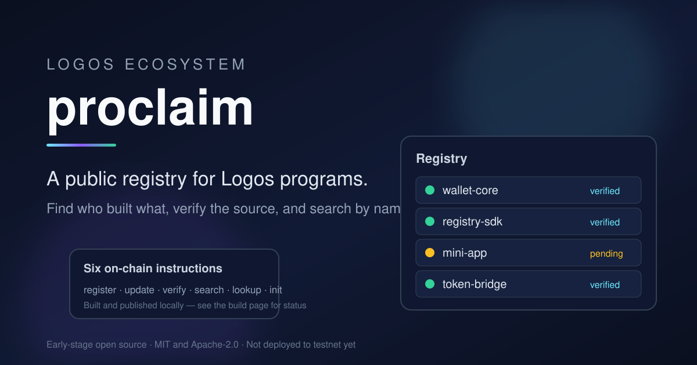

What is proclaim?
Imagine an app store, but instead of phone apps it lists the small programs that run inside the Logos network. Right now there is no easy way to answer simple questions like “who made this?” or “has anyone checked that the source code matches the thing being run?” proclaim is a public directory that answers them.
Find things
Search the catalog by name and see who published each program, when, and what it does.
Check provenance
A source-verification record links a program to the code it claims to come from, so you can catch a mismatch instead of trusting a label.
Plugs into Logos
Built as a Logos module with a command-line tool, a web API and a JavaScript client — so other apps can use the same directory.
What's actually finished
- Six working operations: register, update, mark verified, look up, search and initialise.
- A published, signed module you can download and inspect.
- A public catalog of logos and metadata.
- Command-line tool, browser view, HTTP API and JavaScript client.
- Automated tests for the code and a reproducible build pipeline.
What's still to do
Getting a public network deployment, then real developers and users registering their own programs over time. Software can't create that on its own — it needs people. The starter template is published so any developer can build an integration.